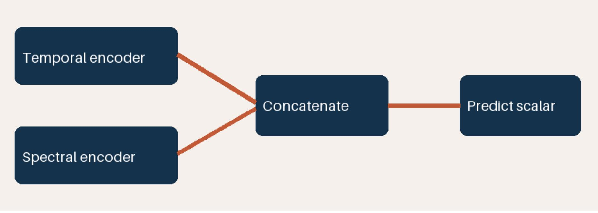

SignalFusion：自制合成示例的结构与内置合成数字
单页合成样例 PDF（source.pdf 第 1 页）· 结构图与全部数值都只是软件自测数据
SYNTHETIC FIXTURE
合成样例 · 非真实论文
① 结构证据：原文档内嵌架构图

图 1 原文档架构图（image-p0001-001）：两支 encoder 汇入 Concatenate，再接 Predict scalar；连线未画箭头，方向按左→右排版推断。
· temporal 与 spectral 两个分支分别编码特征
· 两支特征在 Concatenate 处拼接
· 拼接结果输出一个标量（predict a scalar）
② 样例内置的合成演示数字
baseline MAE
5.0
合成演示值
非真实测量，来自原文 synthetic demonstration scores
fusion MAE
4.0
合成演示值
与 baseline 之差不可当作真实改进幅度
样本量
100
虚构样本
原文写作 “100 fictional samples”
原文同句给出：“Synthetic demonstration scores: baseline MAE 5.0 and fusion MAE 4.0 on 100 fictional samples.”
原文未给任务定义、指标口径、训练配置或误差条，故不作显著性、可复现性或优劣结论。
本页所有数字均为该合成样例中发明出来的软件自测数据（invented software-test data），不是实验结果。
原文约束：“These are invented software-test data and must never be presented as paper results.” —— 不得包装为论文成果、性能对比或可用于决策的证据；文档标题本身即为 “SELF-AUTHORED SYNTHETIC FIXTURE”。